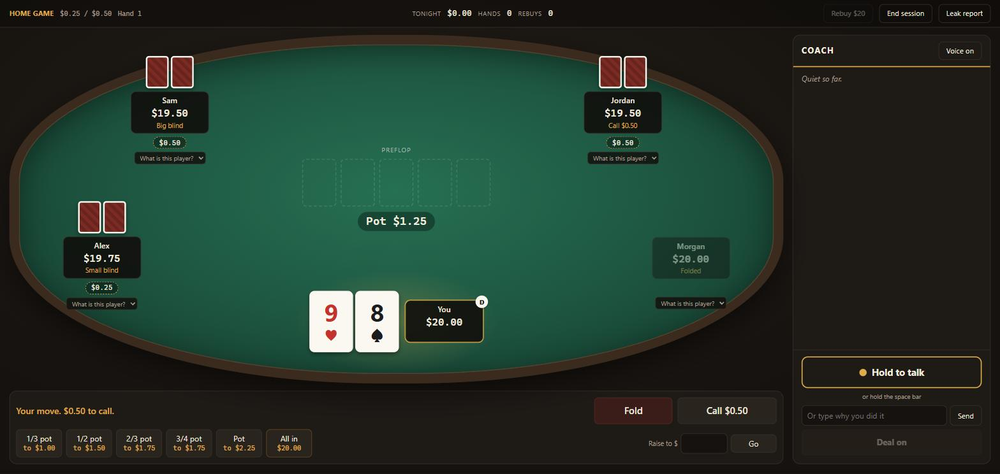

Personal project, 2026
Poker Coach
A poker trainer that plays like my real home game and has a coach that talks back, so I can find the mistakes I keep making and fix them.

- What it is
- Five seat no-limit hold'em trainer
- Built with
- Python and a browser front end
- My role
- Design, direction, testing
- Status
- Finished and in use
Why I made it
I play in a regular home game and I know I have a couple of habits that cost me money. Reading about poker did not fix them. I wanted something that would catch me in the act, in a game that feels like the one I actually play in.
How it works
- Four opponents with different styles. Each computer player has its own way of playing, and the table never tells you which is which. You have to read them, the same as real people.
- A coach that asks why. When a decision looks like one of my known mistakes, the game pauses and the coach asks me, out loud, why I did it. I answer by voice or by typing, and it corrects me.
- A recap after every hand. What was good, what was bad, in plain words.
- A report that tracks mistakes over time. It shows my repeated mistakes, roughly what each one costs, and whether each is shrinking from one session to the next. It also grades how well I read each opponent.
How I built it
I am a marketing major, not a programmer. I planned the product, wrote down exactly how it should behave, and directed AI coding agents that wrote the code. Then I tested it by playing and sent back corrections until it felt right.
A few things I insisted on so I could trust it:
- The part that decides which hand wins was checked against every possible five card poker hand, all 2,598,960 of them.
- It has automated tests, which are small programs that re-check the rules every time something changes.
- It runs entirely on my own computer. If the coach goes offline, the game says so and keeps going instead of pretending everything is fine.
What I took from it
- You do not need to code to ship software, but you do need to be exact about what you want
- How to break a big idea into pieces small enough to build and check one at a time
- AI output has to be tested, not trusted. The first version of almost everything needed a correction
The code is not public yet. I'm happy to demo it or walk through how it was built: brandongkestin@gmail.com.